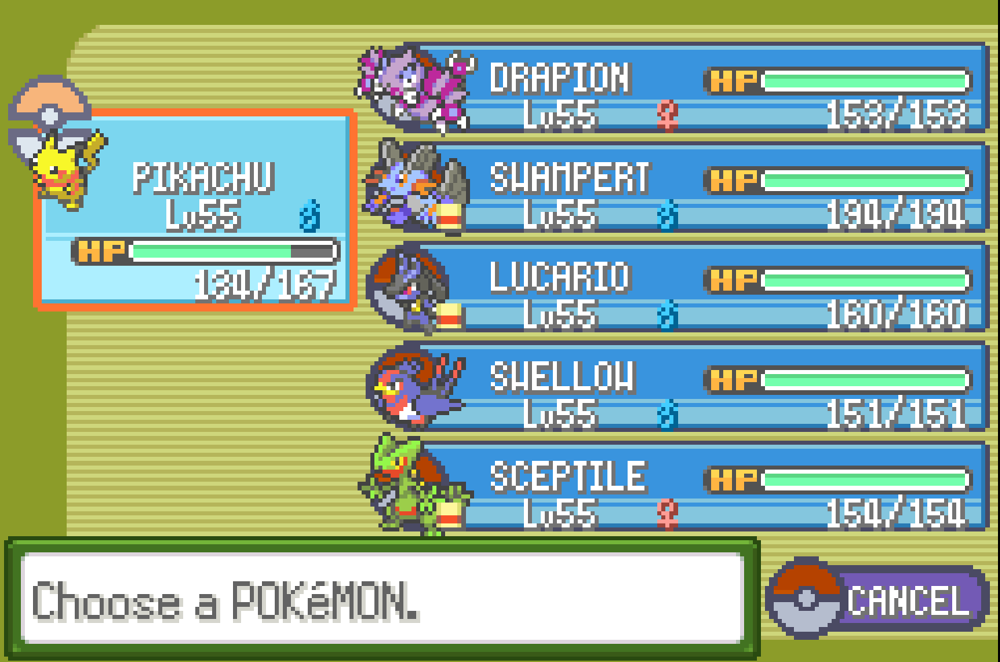
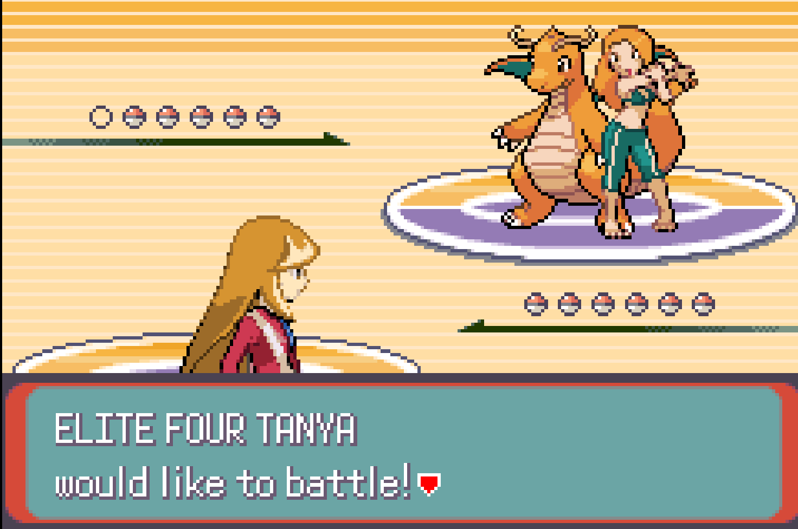
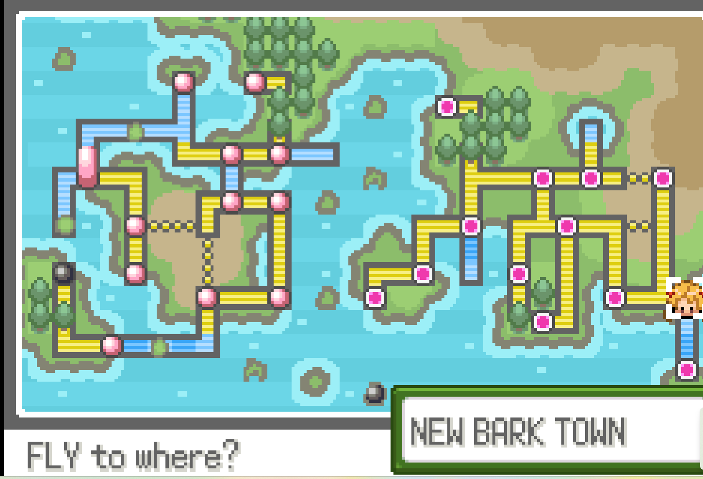
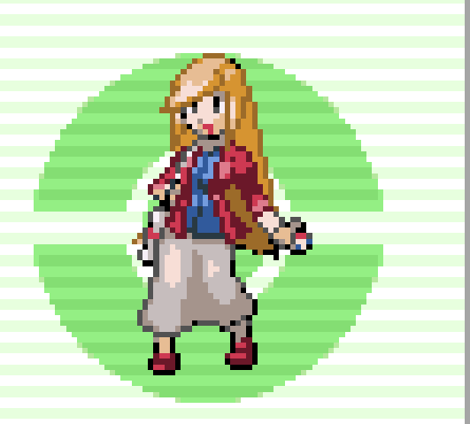
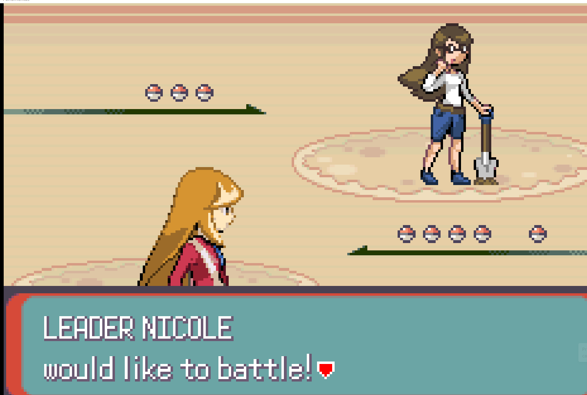
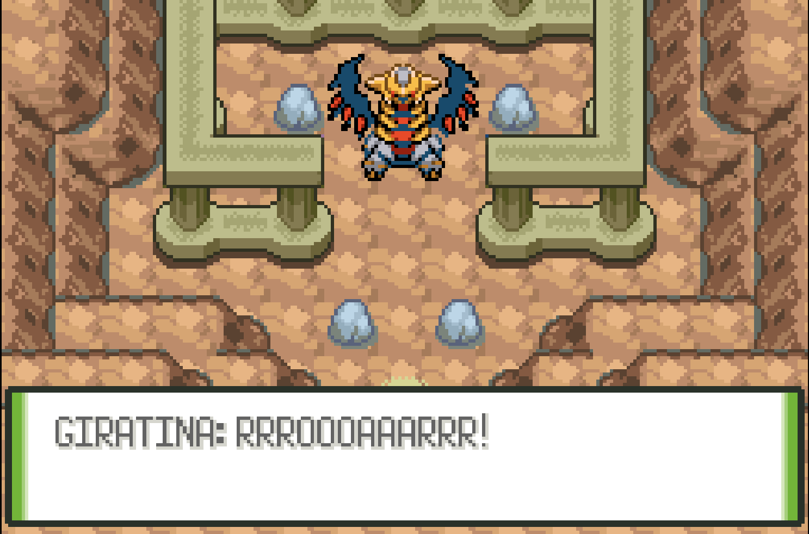
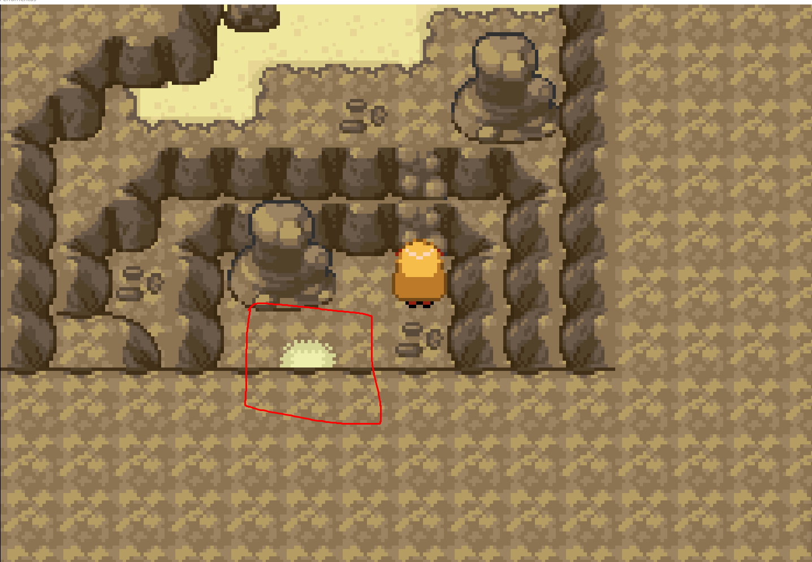
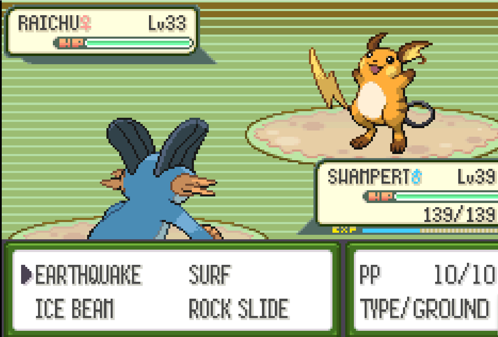

Pokemon Glazed
Desenvolvedor(a): Lucboi
Publicadora: Internet que encontra o patch da rom
Gênero: RPG de TURNO/AVENTURA
Engine: Pokemon Emerald - 3° Geração
Plataformas: PC usando emulação de GB-Advanced
Data de Lançamento: Ano de 2022, feito o ultimo patch
Introdução
Hoje é o dia em que você faz 12 anos, o que significa que hoje é o dia em que você ganha seu primeiro Pokémon. Mas se você estava esperando uma jornada sem incidentes pela região de Tunod, você está completamente enganado. Um poder misterioso está colocando o mundo Pokémon e o mundo real em rota de colisão. Uma equipe misteriosa espreita nas ruínas da antiga Tunod, com um propósito misterioso. Você encontrará aliados em três treinadores itinerantes da região de Johto, bem como um Pikachu de cachecol determinado a se vingar. Você será capaz de lidar com isso?
Mecânica
A versão Glazed introduz a opção de escolher 5 Pokémon (3 iniciais de Sinnoh, um Shinx e um Riolu). Escolhi o Riolu, o que achei bem diferente. Além disso, o jogo permite usar diversos TMs (algo comum em hackrooms) e também possibilita trocar HMs sem precisar recorrer ao Move Deleter (por exemplo, troquei Waterfall por Surf sem complicações). Um grande ponto positivo é a resolução do problema de grind de XP. O jogo permite rebatalhar alguns treinadores e desafios, o que facilita bastante o ganho de experiência para o seu grupo.
A dificuldade do jogo é bem equilibrada, apresentando um nível levemente maior que os jogos normais. Não é extremamente desafiador, mas me deparei com dificuldades específicas nos seguintes ginásios: 3º, 6º, 7º e 8º. Quanto aos rivais, são apresentados três, cada um utilizando um inicial de Johto. Um detalhe interessante é que o jogo entrega um dispositivo para se comunicar com seu Pokémon, o que traz uma interação divertida.
Em relação aos vilões, eles são representados por um grupo que parece uma fusão entre a Team Rocket e a Team Galactic. Porém, o ponto negativo é que muitos vilões usam Pokémon do tipo Fighting ou Rock, o que se torna repetitivo. Além disso, as batalhas contra os chefes acabam sendo meio "meme" devido às escolhas de Pokémon.
Um detalhe que achei inovador foi como a Elite Four é representada: em vez de se especializarem por tipo, os membros se baseiam em cores. Por exemplo, há um personagem que só utiliza Pokémon laranja, mas com vários tipos diferentes, o que torna as batalhas mais desafiadoras e interessantes.
No entanto, um ponto negativo da mecânica foi o pouco uso de puzzles nos ginásios. Em algumas partes, como nas cavernas, os puzzles de Strength foram fáceis demais e pareciam estar ali apenas para bloquear o progresso do jogador, sem um desafio significativo.
Gráficos
Os gráficos têm pontos positivos, como o trabalho dos desenvolvedores no design do mapa e na progressão, que guia o jogador de forma eficiente, utilizando os HMs estrategicamente. Além disso, Pokémon de gerações além da 3ª foram adicionados (como a base de Emerald ROM), e houve mudanças nos estilos de arte de Pokémon que utilizam Fly, Surf e Dive. A imagem abaixo mostra o mapa como é, vale lembrar que o jogo tem um pós-game em jotho com acontecimentos de 10 ou 15 anos depois da jornada em Gold/Silver, resumindo as coisas estão diferentes.
Os designs dos líderes de ginásio, vilões e rivais criados para o jogo são bons. Não são incríveis, mas ultrapassam o aceitável. Mostrando abaixo um design de um líder de ginásio e o design da protagonista como ficaram.
 O único ponto negativo para mim foi o level design das cavernas, que ficou muito ruim e confuso. A imagem abaixo mostra um exemplo que vou detalhar na parte de otimização.
Trilha Sonora
A trilha sonora é satisfatória, mas nada impressionante. No geral, segue o padrão das músicas de jogos de Pokémon da 3ª geração, sem grandes inovações.
História
Como mencionado anteriormente, a história é bem estruturada e guia o jogador com clareza, evitando confusões. Apenas uma vez me senti perdido, mas isso foi devido a problemas no level design, e não na narrativa. Os NPCs também ajudam a dar mais contexto para a região de Tunod e as cidades ao longo do jogo. Os vilões têm personalidades bem construídas e razões plausíveis para seus atos, lembrando um pouco os vilões da Team Galactic e o vilão de Unova. Um problema, no entanto, é a ausência de "mini chefes". Grande parte dos vilões é representada por Grunts (soldados genéricos), com apenas três variações. Seria interessante se houvesse algum mini chefe logo no início da história.
O jogo tenta compensar isso com um Pikachu selvagem que se junta ao grupo dos vilões para se vingar de você. Porém, ele parece mais um bônus do que um verdadeiro mini chefe. Outro detalhe positivo foi a presença de um membro da Elite Four ajudando na luta contra os vilões. Sua participação foi muito bem trabalhada, tanto na narrativa quanto nas batalhas, o que enriquece a experiência.
Otimização
A otimização é um ponto positivo do jogo. Como mencionado na seção de mecânica, ele facilita o ganho de experiência sem precisar recorrer a cheats.
Entretanto, o maior problema de "otimização" está no level design das cavernas. A saída de algumas partes é confusa e mal desenhada, como acontece na Mt. Stratus. O mapa apresenta elementos visuais que não ajudam a identificar os caminhos corretos, como falta de iluminação clara. Abaixo, incluo um exemplo que ilustra esse problema.
Veredito Final
Pokémon Glazed é uma experiência sólida e inovadora dentro do universo das hackrooms. Ele se destaca por introduzir mecânicas bem pensadas, como a possibilidade de rebatalhar treinadores e melhorar a progressão de XP, além de inovar na forma como a Elite Four é apresentada. A história do jogo é rica e bem conduzida, com vilões que apresentam boas motivações e NPCs que ajudam a contextualizar a narrativa de forma eficaz.
O design gráfico é interessante, com adaptações inteligentes no level design geral, apesar de alguns tropeços, especialmente nas cavernas, onde o layout pode ser confuso e frustrante. A trilha sonora, embora funcional, mantém-se dentro do esperado para a franquia, sem grandes momentos marcantes.
Mesmo com algumas falhas, como a ausência de "mini chefes" entre os vilões e o uso repetitivo de certos tipos de Pokémon(dos intregantes dos vilões), o jogo compensa com criatividade e uma jogabilidade equilibrada. É uma ótima escolha para quem busca uma nova aventura no universo de Pokémon, com desafios únicos e um mundo intrigante para explorar.
Nota: 87
Voltar para a página principal